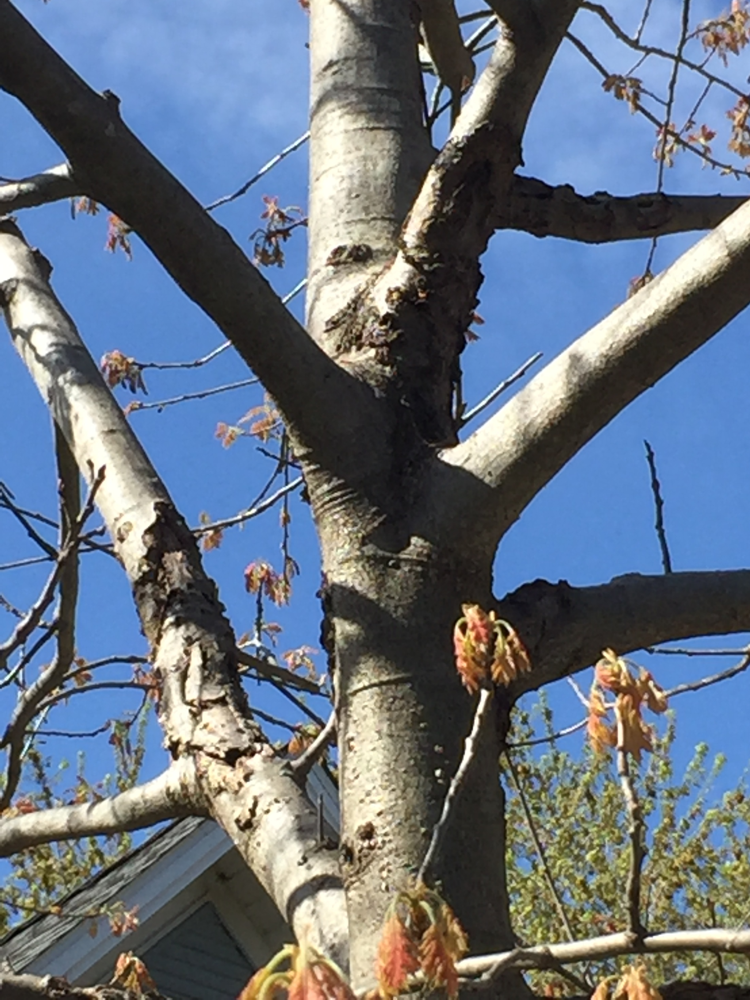

Red Oak Branches
Red Oak branches are commonly used in flooring, veneer, trim, and furnature. It can also be used for lumber, rail road ties and fence posts. Some craftes you can make with red oak branches include createing a garment rack, making stools, a nice wooden floor lamp or coffee table.
<- Go back